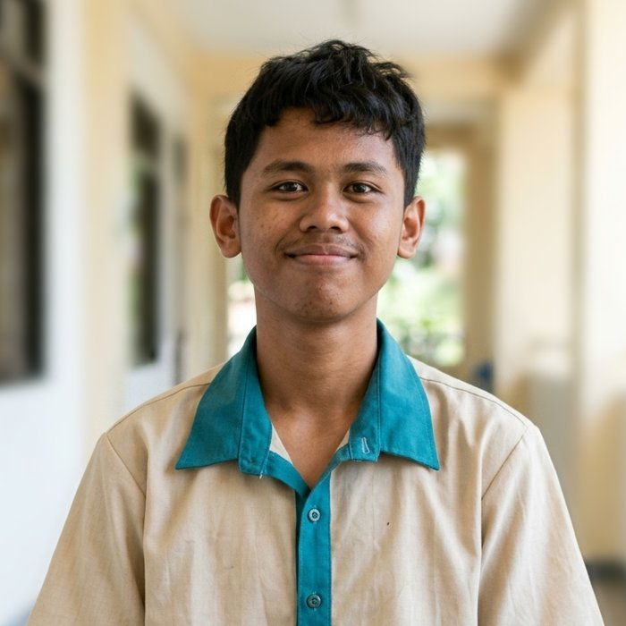

Resort · Lounge · Bayawan City
Choose Your Experience
Fine dining, comfortable stays, live music and gaming entertainment in one destination.
About Casolan
Welcome to Casolan, your destination for great food, comfortable stays and memorable nights. Enjoy freshly prepared dishes, relax in our well-appointed rooms, unwind with live music, or visit our gaming lounge. Reservations and inquiries are by phone or message only.

Welcome from the Owner
I started Casolan with one simple idea: great food, a comfortable stay and a good night out belong in the same place. Every dish, room and performance is prepared with care, and my team and I look forward to welcoming you.
John Aldwin Lagunay
Owner & Founder
AL
Andrea LimGeneral Manager
Oversees daily operations across all four venues.